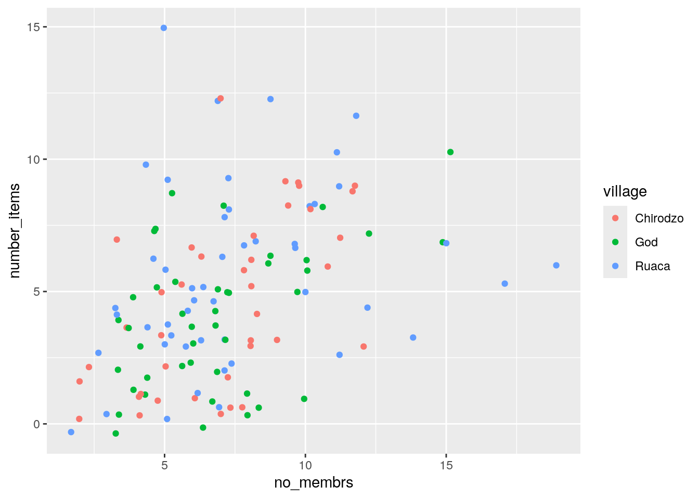
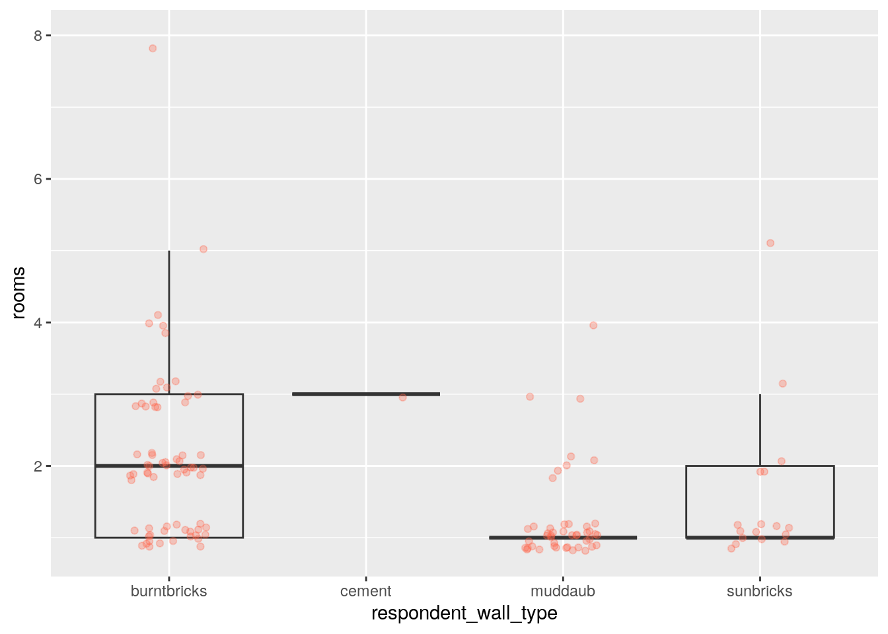

Plotting using ggplot
Introduction
Each chart built with ggplot2 must include the following:
- Data
- Aesthetic mapping (aes)
- Geometric objects (geom)Thus, the template for graphic in ggplot2 is:
<DATA> %>%
ggplot(aes(<MAPPINGS>)) +
<GEOM_FUNCTION>()
Data Prep
library(tidyverse)
library(here)
data <-
read_csv(here("data/SAFI_clean.csv"), na = "NULL") %>%
separate_longer_delim(items_owned, delim = ";") %>%
mutate(value = 1) %>%
pivot_wider(names_from = items_owned,
values_from = value,
names_glue = "owns_{items_owned}",
values_fill = 0) %>%
rowwise %>%
select(-"owns_NA") %>%
mutate(number_items = sum(c_across(starts_with("owns_")))) Scatter plot
A scatter plot uses geom_point()

To differentiate overlapping points, you can use transparency…

…or add jitter:

To add groups, add the variable that defines the groups as an aesthetic mapping, either
in the call to ggplot(), or the one in the geom_() function you use:

Boxplot
data %>%
ggplot(aes(x = respondent_wall_type, y = rooms)) +
geom_boxplot(alpha = 0) +
geom_jitter(alpha = 0.3,
color = "tomato",
width = 0.2,
height = 0.2)
Bar chart
For a simple bar chart of counts:
And since stacked bar charts are not easy to read:

Note that geom_bar() defaults to displaying counts. If you want something else, you can
use the stat = option. stat = "identity" is especially useful, as it displays values as-is,
allowing you to pre-process your data anyway you want, for example to get percentages:
wall_plot <-
data %>%
filter(respondent_wall_type != "cement") %>%
group_by(village, respondent_wall_type) %>%
summarize(n = n()) %>%
mutate(percent = (n / sum(n)) * 100) %>%
ungroup() %>%
ggplot(aes(x = village, y = percent, fill = respondent_wall_type)) +
geom_bar(stat = "identity", position = "dodge")
wall_plotLabels
The labs() function changes labels, the scale_ family of functions change axes and legends:
wall_plot +
labs(title = "Proportion of wall type by village",
fill = "Type of Wall in Home",
x = "Village",
y = "Percent") +
scale_fill_discrete(labels=c('Burned briks', 'Mud Daub', 'Sun Bricks')) +
scale_y_continuous(limits= c(0,100), n.breaks = 6)
Faceting
Faceting allows splitting a graph in multiple parts:
data %>%
group_by(village) %>%
summarize(across(starts_with("owns_"),~sum(.x,na.rm=TRUE) / n() * 100)) %>%
pivot_longer(-village, names_to = "items", values_to = "percent") %>%
mutate(items = str_replace(items,"owns_","")) %>%
ggplot(aes(x = village, y = percent)) +
geom_bar(stat = "identity", position = "dodge") +
facet_wrap(~ items) +
theme_bw() +
theme(panel.grid = element_blank())